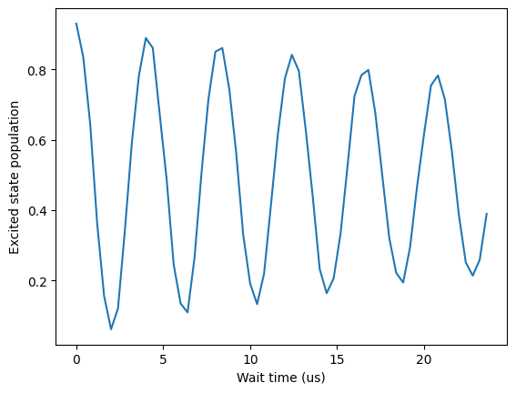
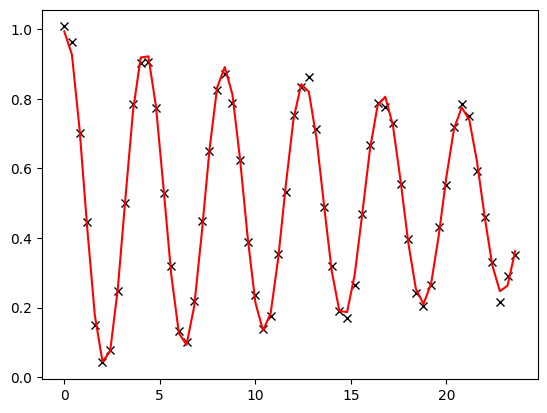

Ramsey Experiment
[1]:
from nqct.utils.QuantumSession import QuantumSession
# api_key = input('Enter API Key') #<---PASTE_API_KEY_HERE instead of the input(...)
# qs = QuantumSession(api_key=api_key, storage_path='temp/')
qs = QuantumSession(api_key="nqct_wN194hn5LE7W9qVBEt8BjMQXGUqIufBpqHvG5tumqHo")
qs.list_backends();
#Copy over the desired backend from the given list
qs.select_backend('quantware_soprano_d2')
| Name | Backend ID | Qubits | |
|---|---|---|---|
| 0 | Qiskit Aer Simulator | aer_simulator | 5 |
| 1 | QuantWare Soprano D2 | quantware_soprano_d2 | 7 |
We continue on from the Rabi experiment to showcase a Ramsey experiment. The Ramsey experiment is designed to map out z-rotations on a qubit. To actually see z-rotations, the idea is to:
First rotate the qubit onto the xy-plane (so that z-rotations actually change the state) via a \(X(\pi/2)\)
Then we let the qubit evolve about the z-axis by sweeping the wait times. The resulting rotations will just be the ensemble average of a stochastic noise (decoherence). To make the dynamics more obvious, we offset the frequency off resonance (not enough to make the Hamiltonian tilt away from the x-axis when driving the qubits - i.e. the x-rotations are still fine).
To measure the resulting rotation, we rotate the qubit via a \(X(\pi/2)\) operation to map the qubit back onto the z-axis.
The resulting oscillations should be equal to the offset frequency with decay time-constant \(T_2^*\) signifying the coherence time of the qubit. In the following experiments, we need to offset the frequency. We do so by first finding the qubit names:
[2]:
qs.get_qubit_names()
[2]:
['Q0', 'Q1', 'Q2', 'Q3', 'Q4']
and querying their properties. In this case, we wish to get the DriveGE frequency:
[3]:
dict_qubit_params = qs.get_qubit_params('Q0')
drive_freq = dict_qubit_params['DriveGE']
drive_freq
[3]:
5141379243.105709
Simple Ramsey using the pre-tuned gates
Here we use the pre-tuned gates to perform the rotations. The following script uses pure OpenQASM3 where we use the cal block to set the drive frequency of qubit $0 off-resonant by 250kHz above:
[4]:
my_script = f"""
OPENQASM 3;
include 'stdgates_transmon_fixed_coupler.inc';
cal
{{
set_frequency(drive0, {drive_freq+250e3});
}}
"""
my_script += r"""
bit[60] c;
qubit q;
for int m in [0:59]
{
reset q;
rx(pi/2) q;
delay[m*400ns] q;
rx(pi/2) q;
c[m] = measure q;
}
"""
qs.set_qasm(my_script)
qs.set_qreg_physical_mapping({('q',0):0})
Setup readout parameters and execute
[5]:
qs.set_acquisition_type('DISCRIMINATION')
qs.set_averaging_type('SingleShotCounts')
qs.set_num_shots(1024)
qs.set_shot_repeat(1)
#
leRes = qs.run()
The resulting array slices over the 21 bit register measurements, each with 1024 shots (i.e. 0 or 1). So take the average on each measurement over all its shots and plot the Rabi oscillations:
[6]:
import numpy as np
import matplotlib.pyplot as plt
cur_arrs = leRes.get_data('c')
pops_e = np.mean(cur_arrs, axis=1)
fig, ax = plt.subplots(1); ax.set_xlabel('Wait time (us)'); ax.set_ylabel('Excited state population')
ax.plot(400e-9*np.arange(60) * 1e6, pops_e);

Simple Ramsey using the pulse-control
Now we perform the same experiment, but using the low-level pulse control via OpenPulse constructs. We won’t redo the Rabi to get the calibrated \(X(\pi/2)\) amplitudes. Instead we will use the current calibration given by NQCT:
[7]:
X_pi2_ampl, X_pi2_time = dict_qubit_params['DriveGEAmplitudeXon2'], dict_qubit_params['DriveGETime']
Now we pass these onto a custom Ramsey pulse sequence where we vary the delay inside the OpenPulse constructs within the defcal command:
[8]:
my_script = f"""
OPENQASM 3;
include 'stdgates_transmon_fixed_coupler.inc';
cal
{{
set_frequency(drive0, {drive_freq+250e3});
const float X_pi2_ampl = {X_pi2_ampl};
const duration X_pi2_time = {X_pi2_time*1e9}ns;
}}
bit[60] c;
bit[2] calib;
qubit q;
"""
my_script += r"""
defcal ramsey(duration wait_time) $0
{
play(drive($0), gaussian(X_pi2_time, X_pi2_ampl));
//The delay command in OpenPulse is per line instead of per qubit like in OpenQASM.
//Also using a predefined drive0=drive($0) as delay commands require literals.
delay[wait_time] drive0;
play(drive($0), gaussian(X_pi2_time, X_pi2_ampl));
}
//Take calibration traces
//Ground
reset q;
calib[0] = measure q;
//Excited (could use OpenPulse constructs, but let's just use the pre-calibrated x-gate)
reset q;
x q;
calib[1] = measure q;
//Perform the Ramsey experiment
for int m in [0:59]
{
reset q;
//This automatically calls our defcal as q is mapped to qubit $0.
ramsey(m*400ns) q;
c[m] = measure q;
}
"""
qs.set_qasm(my_script)
qs.set_qreg_physical_mapping({('q',0):0})
Once again, like with the Rabi example, we take calibration points for G and E as we will once again not presume that we have calibrated the readout. Thus, let’s just take in the raw IQ values integrated over 1024 shots:
[9]:
qs.set_acquisition_type('INTEGRATION')
qs.set_averaging_type('AverageRepetitions')
qs.set_num_shots(1024)
qs.set_shot_repeat(1)
leRes = qs.run()
Warning: Treating angle variable as a float.
Similar to the Rabi example, we will use the normalisation utility to get the corrected populations:
[10]:
import numpy as np
import matplotlib.pyplot as plt
from sqdtoolz.Utilities.DataFitting import DFitSinusoid
from sqdtoolz.Utilities.DataIQNormalise import DataIQNormalise
rabi_arrs = np.array(leRes.get_data('c'))
calib_arrs = np.array(leRes.get_data('calib'))
#The class accepts multiple sampled points for G and E, since we only have 1, we nest the array...
dNorm = DataIQNormalise([calib_arrs[0]], [calib_arrs[1]])
normalised_data = dNorm.normalise_data(rabi_arrs)
dfit = DFitSinusoid()
dpkt = dfit.get_fitted_plot(np.arange(60)*400e-9 * 1e6, normalised_data)
print(f"Frequency: {dpkt['frequency']*1e3:.4g}kHz\nT2*: {1/dpkt['decay_rate']:.3g}us")
Frequency: 240.4kHz
T2*: 35.5us

The decay rate here gives the \(T_2^*\) while the frequency matches the offset frequency - i.e. signifying that the calibrated resonant frequency is accurate.